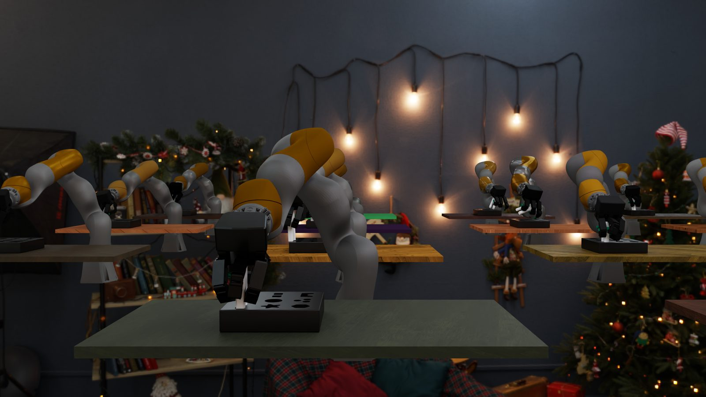

The idea
A faster path to
general dexterity.
Dexterous robots repeatedly need the same core abilities—reach, grasp, lift, reorient, and transport. Yet conventional RL learns them again from scratch for every downstream task.
ADEPT first learns this shared foundation through a generic object reposing task. It then post-trains task specialists while preserving the pretrained behavior, and distills them into perceptive policies for zero-shot sim-to-real deployment.
Learn dexterity once. Build every new behavior on top.
The method
The ADEPT recipe
Four stages carry a policy from broad simulated experience to contact-rich manipulation from raw visual and tactile perception.
One generic object-reposing task over randomized primitives teaches the reusable dexterous prior πpre.
The prior adapts to precise, contact-rich insertion — in three steps designed to never erase it.

Domain-randomized stereo RGBThe specialist becomes a teacher: a stereo-RGB student learns to act from pixels through a two-stage curriculum.
The student runs zero-shot on real hardware — one continuous policy from raw perception to action.
Click the tabs to step through the pipeline · hover the dotted terms
Pseudocode
ADEPT training, end to end
Pre-train reusable dexterity, then adapt it without erasing the prior.
def pretrain(M_pre, fabric, adr):
pi_pre, V_pre = initialize_actor_critic()
ppo = PBT.initialize_optimizer()
while not converged(pi_pre):
env = M_pre.sample(
objects=primitive_shapes(count=16),
scale="random", goal_pose="random",
)
adr.randomize(env)
adr.anneal_gravity(0.0, -9.81)
trajectories = []
for step in rollout_horizon:
o_pre = env.observe()
action = pi_pre.sample(o_pre)
command = fabric.full_cspace_command(action)
transition = env.step(command)
trajectories.append(transition)
pi_pre, V_pre = ppo.update(
trajectories, reward=reposing_reward
)
adr.advance_if_ready(success_rate(trajectories))
ppo = PBT.tune(ppo)
return pi_pre, V_predef post_train(pi_pre, M_post, fabric):
# A. Distill the prior into the expanded observation space.
pi_post = initialize_actor(observations=M_post.observations)
while not actor_distilled:
o_post = M_post.sample_observations(adr_level=20)
a_teacher = pi_pre(project_to_pretrain_obs(o_post))
loss_bc = distillation_loss(pi_post(o_post), a_teacher)
minimize(loss_bc, parameters=pi_post)
# B. Calibrate a fresh critic before updating the actor.
V_post = initialize_critic()
freeze(pi_post)
while not value_calibrated:
trajectories = rollout(pi_post, M_post, fabric)
returns = discounted_returns(trajectories, M_post.reward)
minimize(mse(V_post(trajectories.obs), returns))
# C. Add downstream behavior with conservative PPO.
unfreeze(pi_post)
actor_lr = linear_decay(1e-3, 1e-5)
clip_eps = linear_decay(0.20, 0.05)
critic_lr = 5e-5
while not converged(pi_post):
trajectories = rollout(pi_post, M_post, fabric)
advantages = GAE(trajectories, V_post)
pi_post, V_post = conservative_PPO(
trajectories, advantages, actor_lr, critic_lr, clip_eps
)
M_post.adr.advance_if_ready(success_rate(trajectories))
return pi_post, V_post